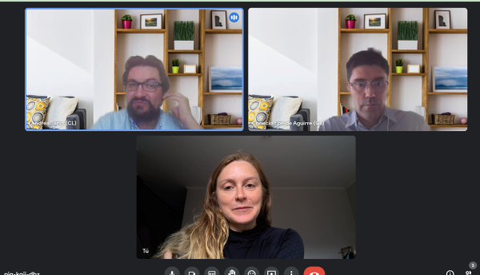
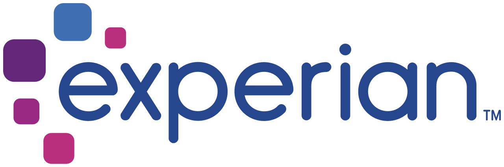
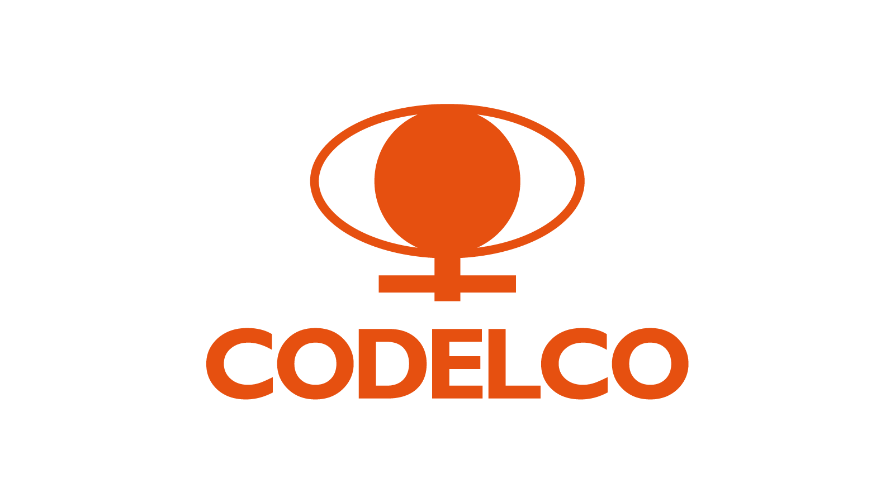

Consultora boutique · +15 años liderando tecnologías
somos expertos en tecnología
Transformamos problemas complejos en soluciones que operan en producción — IA, automatización y liderazgo tecnológico con el mismo estándar que exigen minería, fintech y energía.
Productos, no promesas.
Cada submarca resuelve un problema distinto. Empieza por donde más te duele.
Dana AI Studio
Agentes de IA por rol — inbound, outbound, preventa y postventa — en WhatsApp, CRM y calendario. Trabajan 24/7 con reglas de negocio claras.
Ver demos y planes →Gerente TI as a Service
Liderazgo tecnológico ejecutivo: arquitectura, proveedores, seguridad y roadmap de IA — sin contratar un gerente interno.
Conocer más →Dana Tech Solutions
Software factory end-to-end e integración IoT. De la idea al producto en producción.
Conocer más →Dana Audit — AI Operations Audit
Diagnóstico de brechas, roadmap de automatización con IA y plan de digitalización en 2–4 semanas.
Empezar por aquí →Lo hemos resuelto en producción.
Proyectos reales en industrias donde el error cuesta caro.

App COPEC — FF.AA.
Módulo de gestión de combustible para las Fuerzas Armadas dentro de Muevo Empresas, integrado al core SAP.
Sensor Inteligente DERCO
Plataforma de telemática y seguridad vehicular: IoT, cloud AWS, app móvil e integración con Carabineros.

OPM3 Codelco
Evaluación de madurez organizacional sobre 105 facilitadores OPM3 en divisiones de la minera más grande del mundo.


Tus dolores de cabeza son nuestra especialidad.
Agenda un diagnóstico sin costo. Conversamos tu situación y te digo con franqueza por dónde partir.
Agenda tu diagnóstico →